GO IV 計算從相簿選 1 張遊戲內精靈摘要截圖，在裝置上辨識名稱、CP、HP 與強化星塵，並依圖鑑數值反推可能的 IV 組合與等級。計算、歷史與收藏都留在這台 iPhone 或 iPad。
產品介紹
- 摘要截圖：一次一張。讀得到名稱、CP、HP 與強化星塵就直接顯示結果，等級 41 以上（強化星塵 11,000 起）與強化過的半級也算得出來。圖裡缺這些資料時會提示錯誤，不會寫進歷史。
- 五個 Tab：底部是「精靈」（圖鑑）、「IV」、「收藏」、「相剋」、「設定」。圖示分別是足跡、函數、星星、盾牌與齒輪。
- 圖鑑：用編號、中文或英文名搜尋，點牌卡看三圍、屬性、進化、技能，以及各等級 CP、HP。進化後等級 50 的最大 CP、HP 只作參考。圖鑑資料可從 Firebase Storage 的
catalog/species.json更新；離線時用 App 內建備份。 - 訓練師等級：可選，在 IV 頁左上角或「設定」分頁調整。用來對齊摘要上的等級範圍，不進入 CP 公式。沒設定時，同一組星塵仍可能對應多個等級。
- 結果：百分比環、攻擊／防禦／體力 IV、等級滑桿與下一步建議。可開啟好夥伴加成，看該等級加成後的 CP、HP。範圍很寬時圓環會顯示「?」。
- PvP：結果頁列出小小盃、超級、高級、大師聯盟的名次（Rank）與佔 Rank 1 的百分比，進化鏈每一階都算。點一組 IV 可看最佳等級、CP、實際攻擊，以及養到該等級需要的星塵、糖果與 XL 糖果，也能一鍵複製改名字串。收藏牌卡會標出最佳名次。
- 相剋：對戰時查屬性。「查對手」選 1–2 個屬性或搜尋名字，看該用什麼打、別用什麼，以及隊伍裡該派誰、別派誰；「我的隊伍」每個聯盟存 3 隻，一眼看到每隻的弱點與抗性。屬性都附上圖示，水、冰、龍這類相似屬性也好分辨。
- 設定：PvP 等級上限（40／50／51）、IV 保底、預設聯盟、改名格式與訓練師等級。
- 本機資料：歷史只存辨識結果與相簿識別碼，不存截圖檔。收藏只存你點下的那一組 IV。對戰隊伍只存種類與招式選擇。
- 廣告：IV 頁在「幫精靈評價」下方可能出現原生廣告，結果頁底部可能有橫幅，相剋分頁最下方可能有一張原生廣告。圖鑑與收藏第一層、設定沒有廣告。第一次會問相簿權限；廣告可能再問追蹤許可（ATT），拒絕後改為非個人化。細節見隱私權。
操作手冊
下面的圖鑑、IV、結果與收藏是不含遊戲內畫面的介面示意。選圖權限、訓練師等級、PvP、相剋與設定是模擬器畫面。實機字級可能略有不同。
1. 圖鑑
點底部「精靈」。搜尋框可填編號、中文或英文名。點一列進入詳細頁，可看三圍、屬性與相剋、進化鏈、技能，並用滑桿看各等級的 CP、HP 範圍。進化後等級 50 的最大 CP、HP 標在進化區，只供對照。圖鑑頁不計算 IV，也沒有廣告。
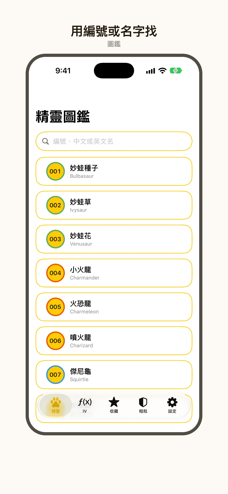
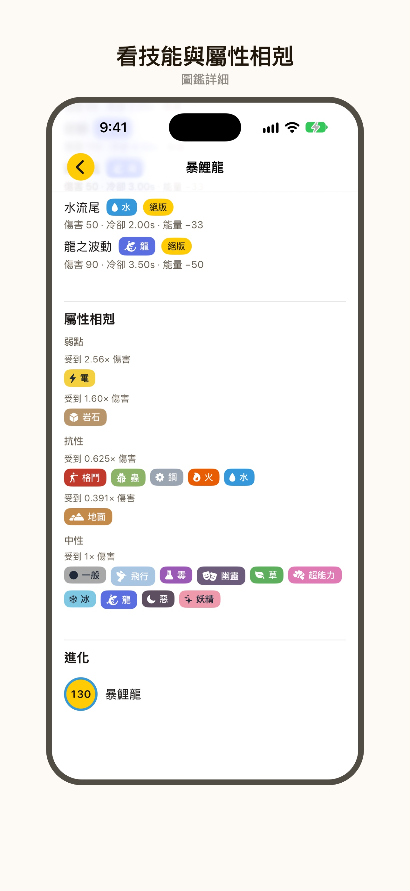
2. IV 與選圖
- 在遊戲裡打開一隻精靈的摘要（畫面上要有 CP、HP 與強化星塵），截一張圖存進相簿。
- 打開 App 的 IV Tab，點黃色按鈕「幫精靈評價」。
- 第一次選圖會詢問相簿權限。請允許存取，App 才能列出照片。說明見隱私權。
- 在格狀清單點一張摘要。畫面上會先顯示「辨識中」，接著「計算中」。
- 辨識成功後，同一頁蓋上結果。可加入收藏，或點關閉回到 IV 頁。
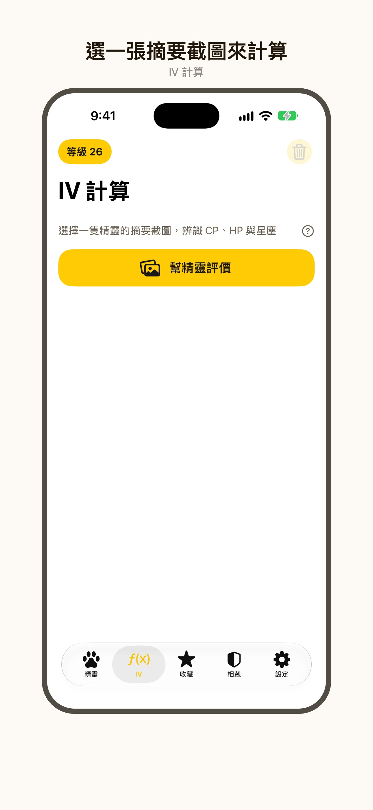
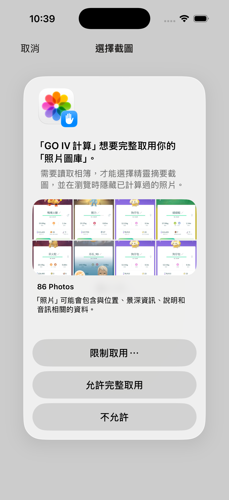
黃色按鈕下方可能有一則原生廣告，再往下是計算歷史。問號會說明：歷史留 90 天、沒有筆數上限、左滑可刪一筆；收藏不會過期。
3. 訓練師等級
IV 頁左上角黃色膠囊是訓練師等級，可設 1–50，或選不設定，再點「完成」。「設定」分頁也能改。它只用來對齊摘要上的等級，不改 CP 算法。同一組星塵若仍對到兩個等級，結果頁會請你核對訓練師等級，或強化一級再算。
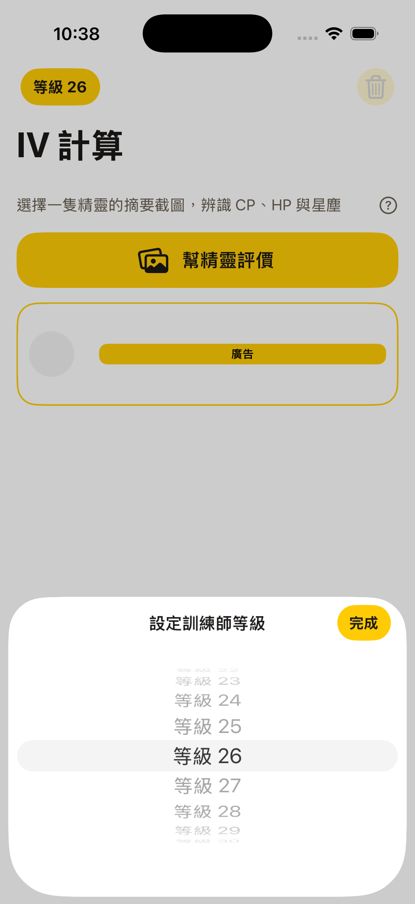
4. 結果與收藏
結果頁有百分比環、攻擊／防禦／體力 IV、等級滑桿與建議。範圍超過約 20 個百分點時，圓環顯示「?」。打開「好夥伴加成」後，該等級的 CP、HP 會標出加成後的數字。右上角星號把目前這一組存進收藏。左上角關閉回到 IV 頁。結果頁底部可能有橫幅廣告。往下捲是 PvP 區塊，見下一節。
底部「收藏」可搜尋名稱、編號或 CP。牌卡會標出這組 IV 在預設聯盟的最佳名次，例如「GL #1 · 100.0% · 哈克龍」。點牌卡會先顯示「載入中…」，再開結果，而且只呈現當初收藏的那一組 IV。收藏第一層沒有廣告。
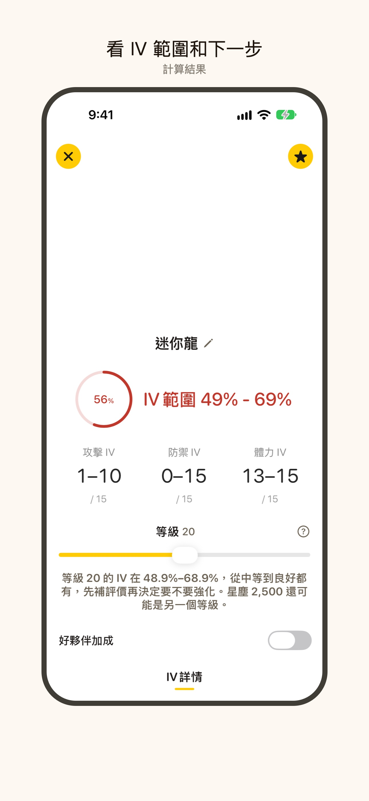
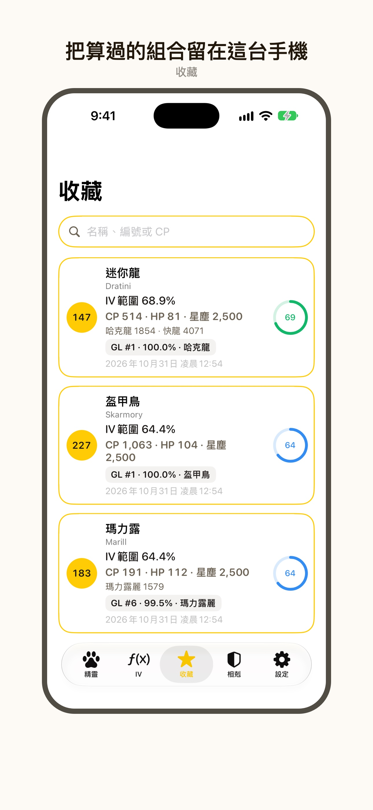
5. PvP 名次與改名
- 在結果頁往下捲到「PvP」，用上方的切換選聯盟：小小盃（CP 500）、超級（1,500）、高級（2,500）、大師（無上限）。小小盃只列第一階。
- 每一階一張牌卡，寫著名次區間、最佳等級與 CP，以及佔 Rank 1 的百分比。同一個體質乘積的組合名次相同。
- 在 IV 詳情表格點一組，PvP 區塊會改成這一組的明細：名次、最佳等級、CP、體質乘積、實際攻擊與 Rank 1 的比較，以及從目前等級養到最佳等級的星塵、糖果、XL 糖果與第二大招成本。暗影精靈可切換「淨化後」，也可打開「亮晶晶」看星塵減半。
- 按「複製」把改名字串（例如
①⑮⑮GL1）放進剪貼簿，回遊戲改名時貼上。格式可在「設定」分頁換。
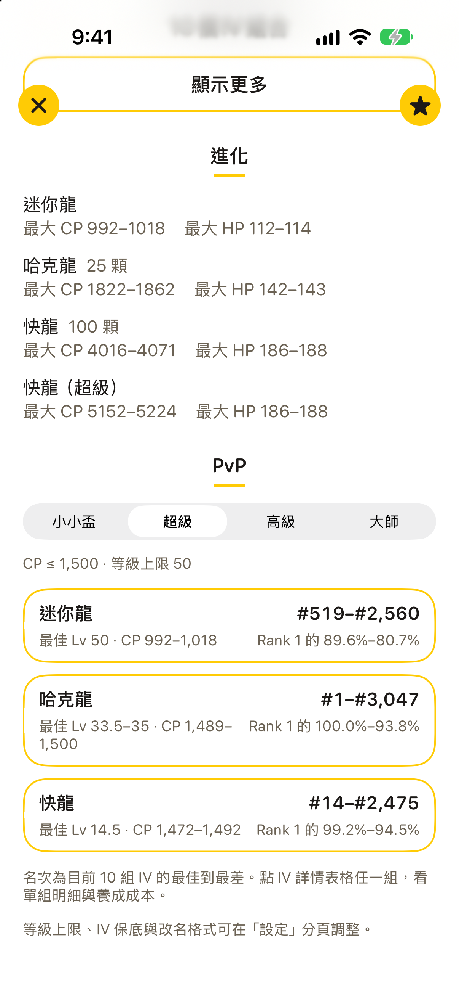
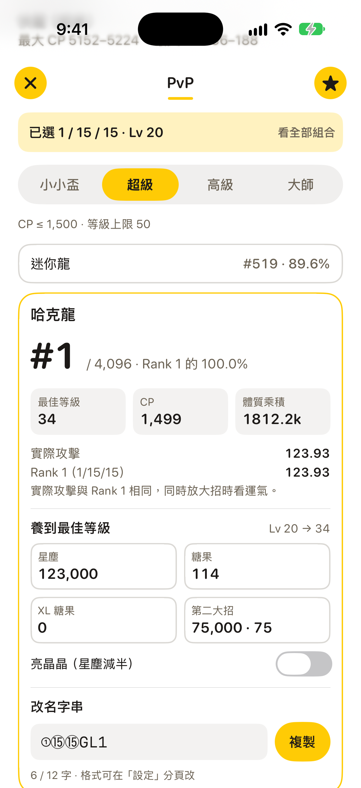
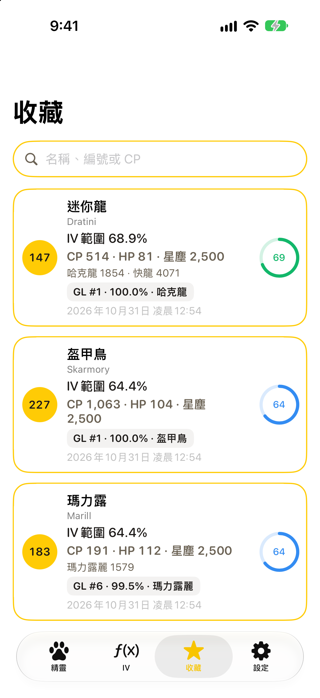
6. 相剋
點底部「相剋」。「查對手」選對手的 1–2 個屬性，或在上方搜尋名字（也可打英文名或編號），下方會列出該用什麼屬性打（倍率越高越好）、別用哪些屬性。「我的隊伍」每個聯盟存一組 3 隻，卡片列出每隻的弱點、抗性與招式屬性；可在收藏長按、或結果頁 PvP 區塊加入。查對手時，隊伍卡會告訴你該派哪隻（用這隻打）、別派哪隻（別用），並標出被剋或招式被抵抗；會看隊員設定的招式，沒設招式就用隊員自身屬性。
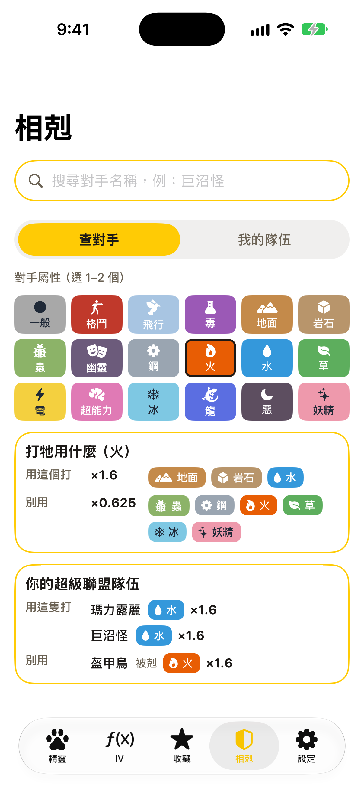
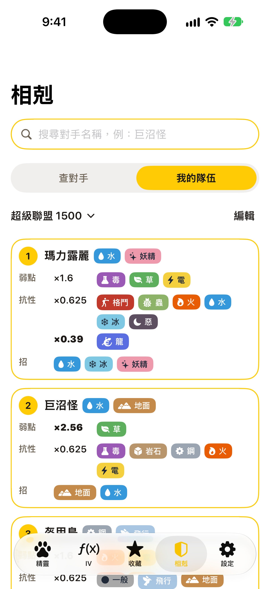
7. 設定
點底部「設定」。等級上限決定排名時最多養到幾級：40 不用 XL 糖果，50 用 XL 糖果，51 是正港好夥伴再加 1 級。IV 保底排除不可能出現的組合，例如團體戰、孵蛋、研究的 IV 至少是 10。預設聯盟決定結果頁與收藏先顯示哪一個聯盟。這些設定會同時套用到結果頁與收藏。
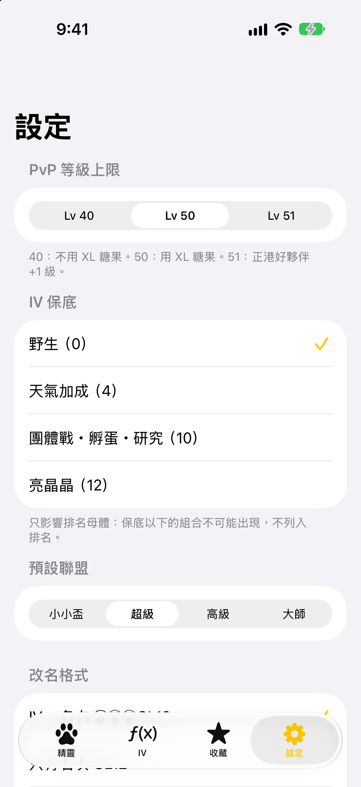
8. 歷史與相簿排除
- 計算成功後，這張照片的相簿識別碼會記在歷史。下次開選圖格，同一張摘要會被隱藏。
- 在 IV 頁左滑可刪一筆歷史。右上角垃圾桶會先詢問，再清除全部歷史，不會刪收藏。刪掉之後，那張照片會重新出現在選圖格。
- 打開 IV 頁時，超過 90 天的歷史會清掉。收藏不受影響。
GO IV Calculator reads one in-game summary screenshot from your photo library, recognizes the name, CP, HP, and power-up stardust on your device, and estimates possible IV sets and level. History and favorites stay on that iPhone or iPad.
About the app
- One screenshot: If the name, CP, HP, and power-up stardust are readable, the result opens immediately, including level 41 and up (11,000 stardust and more) and powered-up half levels. A missing value shows an error and is not saved to history.
- Five tabs: Dex, IV, Saved, Matchups, and Settings. The icons are a paw, a function, a star, a shield, and a gear.
- Dex: Search by number or name, then open a page for base stats, type, evolution, moves, and CP/HP by level. Level-50 max CP and HP after evolution are reference figures. Catalog data can refresh from Firebase Storage (
catalog/species.json) and uses the copy bundled in the app when offline. - Trainer level: Optional, set on the IV tab or in Settings. It lines up the level range on the summary and is not part of the CP formula. With it unset, one stardust cost can still match more than one level.
- Results: A percent ring, attack / defense / HP IVs, a level slider, and a next step. Buddy boost shows that level’s boosted CP and HP. A wide range shows “?” in the ring.
- PvP: Results list the rank and percent of rank 1 in Little Cup, Great, Ultra, and Master League for every evolution stage. Tap an IV set to see its best level, CP, attack, and the Stardust, Candy, and XL Candy needed to get there, and copy a nickname in one tap. Saved cards show the best rank.
- Matchups: Check types during a battle. In Opponent, pick one or two types or search a name to see what hits it hard, what to avoid, and which team member to send in or keep out. In My Team, save three members per league and see each one’s weaknesses and resistances at a glance. Every type has an icon, so similar types such as Water, Ice, and Dragon are easy to tell apart.
- Settings: PvP level cap (40 / 50 / 51), IV floor, default league, nickname format, and trainer level.
- On this device: History stores the reading and a photo identifier, not the image file. Saved stores only the IV set you starred. Battle teams store only the species and move choices.
- Ads: The IV tab may show a native ad under Appraise, and the results screen may show a banner, and the bottom of the Matchups tab may show one native ad. The Dex list, Dex detail, Saved list, and Settings do not. The app asks for photo access, and ads may ask for tracking permission (ATT); declining uses non-personalized ads. Details are on the Privacy page.
User guide
The Dex, IV, results, and Saved pictures are interface mockups with no in-game artwork. The photo-permission, trainer-level, PvP, Matchups, and Settings pictures are simulator screens. Type size may differ on a device.
1. Dex
Open the Dex tab. Search by number or by either language’s name, then tap a row. The detail page shows base stats, type, the evolution line, moves, and a slider for CP and HP at each level. Level-50 max CP and HP after evolution are listed there as a reference. This tab does not calculate IVs and has no ad.
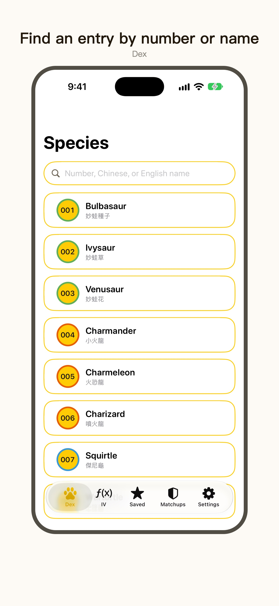
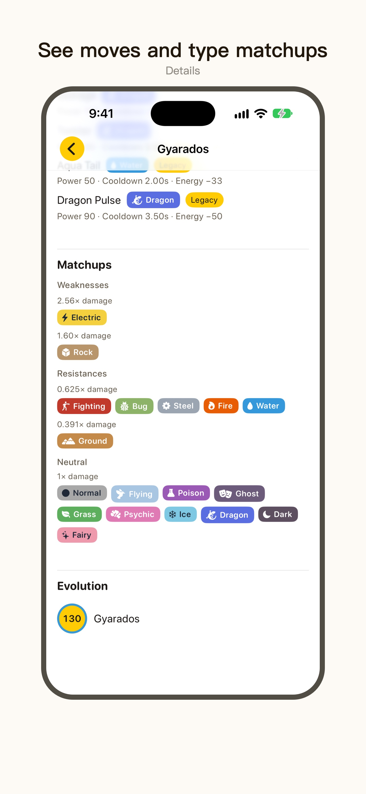
2. IV and picking a screenshot
- In the game, open a summary that shows CP, HP, and power-up stardust, and save a screenshot to Photos.
- On the IV tab, tap the yellow Appraise button.
- The first time, allow photo library access so the grid can list pictures. See Privacy.
- Tap one summary. The screen shows a recognizing spinner, then a calculating spinner.
- On success the result covers the same page. Star it to save, or close to return to the IV tab.
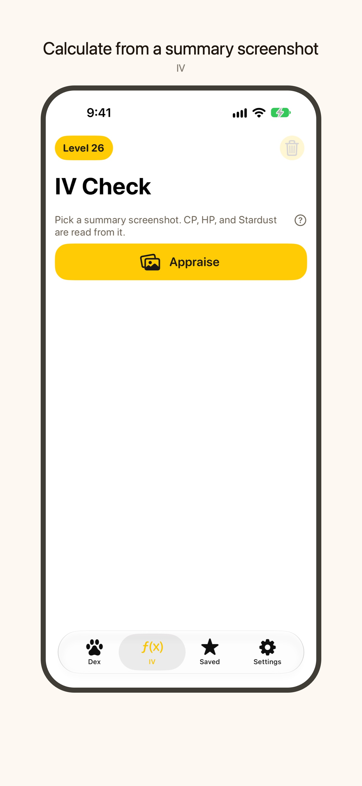
A native ad may sit under Appraise, with history below it. The help button explains that history is kept for 90 days, with no count limit, and that a swipe deletes one row. Saved items do not expire.
3. Trainer level
The yellow capsule at the top left of the IV tab sets trainer level from 1 to 50, or leaves it unset. Tap Done to store it. You can also change it in Settings. It only lines up the level on the summary. It does not change how CP is calculated. If one stardust cost still matches two levels, the result asks you to check the trainer level or power up once and calculate again.
4. Results and Saved
Results show the percent ring, attack, defense, and HP IVs, a level slider, and a suggestion. A spread of about 20 points or more shows “?” in the ring. Buddy boost marks that level’s boosted CP and HP. The star at the top right saves the set you are viewing. Close returns to the IV tab. A banner may sit at the bottom. Scroll down for the PvP section, covered next.
The Saved tab searches by name, number, or CP. Each card shows the set’s best rank in the default league, such as “GL #1 · 100.0% · Dragonair”. Tapping a card shows a loading state, then the result for only the IV set that was saved. The Saved list has no ad.
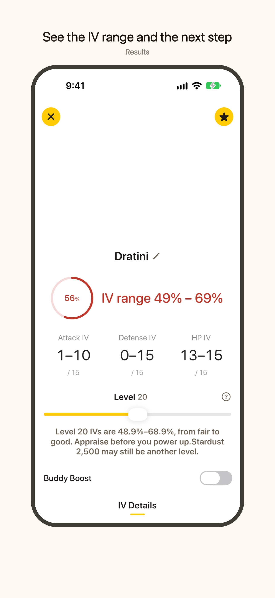
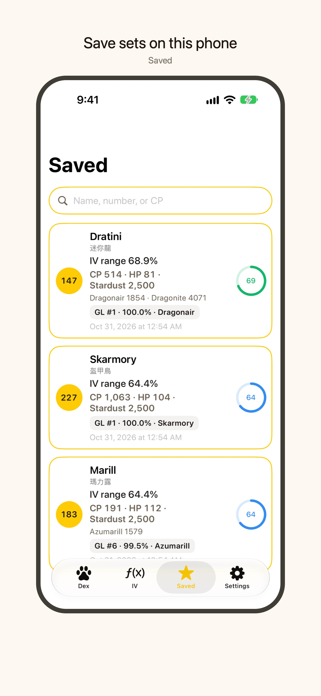
5. PvP ranks and nicknames
- On the result, scroll to PvP and pick a league: Little Cup (CP 500), Great (1,500), Ultra (2,500), or Master (no cap). Little Cup lists the first stage only.
- Each stage gets a card with its rank range, best level and CP, and percent of rank 1. Sets with the same stat product share a rank.
- Tap a set in the IV details table to see that set alone: rank, best level, CP, stat product, attack compared with rank 1, and the Stardust, Candy, XL Candy, and second charged move cost from its current level. Shadow Pokémon can switch to purified, and Lucky halves the Stardust.
- Tap Copy to put the nickname (such as
①⑮⑮GL1) on the clipboard, then paste it when renaming in the game. Change the format in Settings.
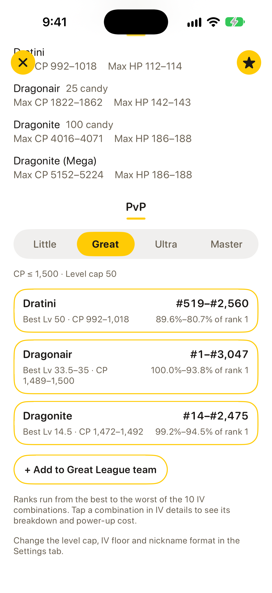
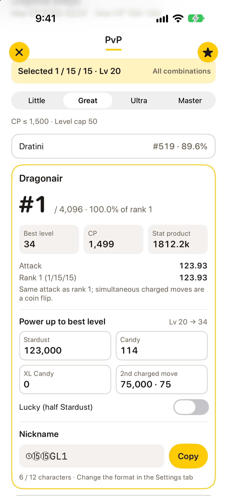
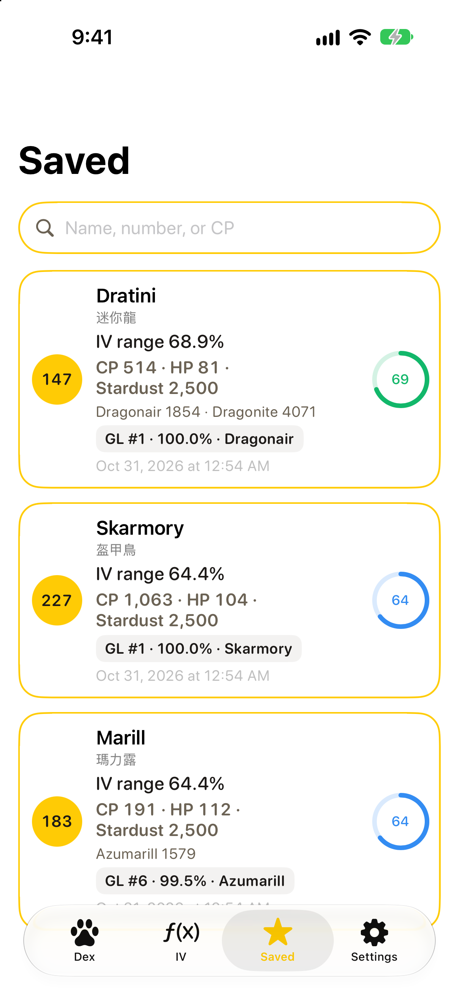
6. Matchups
Open the Matchups tab. In Opponent, pick one or two of the opponent’s types, or search a name at the top (English name or number also works). Below you see which types hit it hard (higher is better) and which to avoid. In My Team, save a team of three for each league; each card lists weaknesses, resistances, and move types. Add members from a saved entry’s long-press menu or the PvP section of a result. The lookup also tells you which team member to send in and which to avoid, and why (weak to it, or moves resisted). It uses the moves you set for each member, or the member’s own types if none are set.
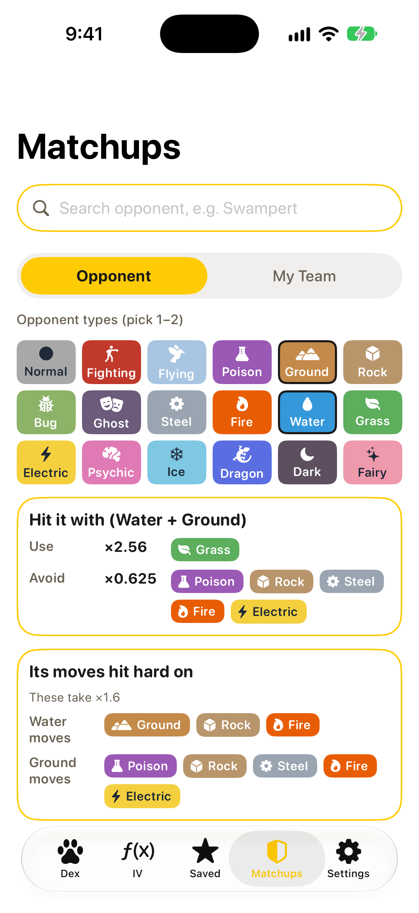
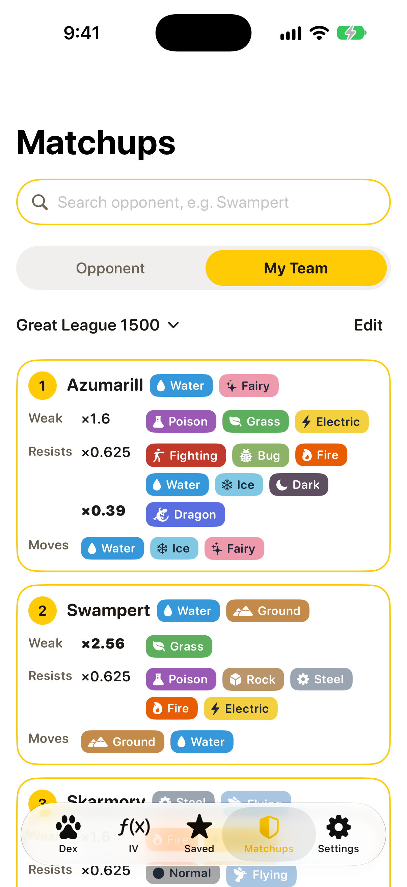
7. Settings
Open the Settings tab. The level cap is how far a set is powered up when ranking: 40 uses no XL Candy, 50 uses XL Candy, and 51 adds the Best Buddy level. The IV floor leaves out sets that cannot occur, such as raid, egg, and research Pokémon, which have at least 10 in each IV. The default league is the one results and Saved show first. These settings apply to both results and Saved.
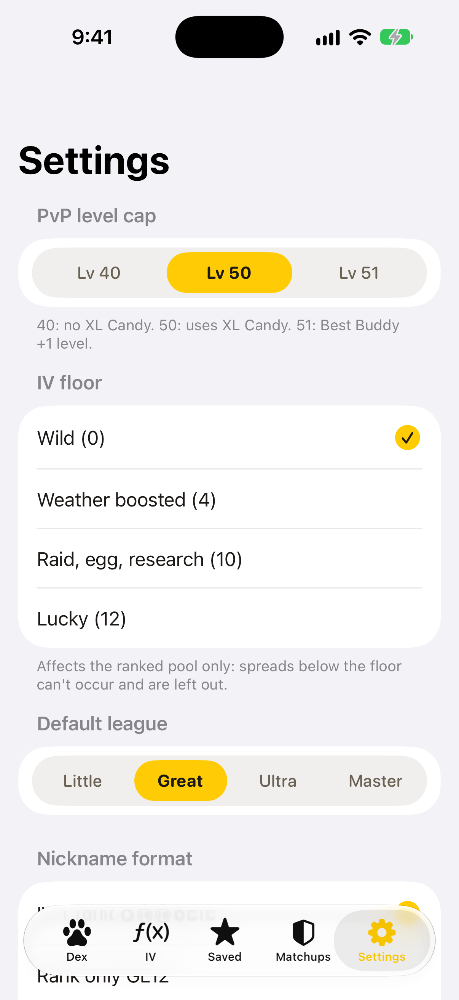
8. History and the photo grid
- After a successful calculation, that photo’s library identifier is stored. The same summary is hidden in the picker grid the next time you choose a picture.
- Swipe a history row to delete it. The trash button asks first, then clears all history and does not delete Saved. After either deletion, that photo shows in the grid again.
- Opening the IV tab removes history older than 90 days. Saved items stay.